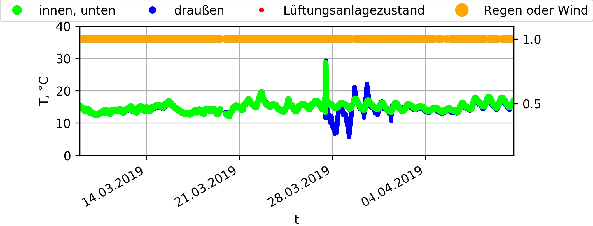

	<center>
	<b>Air-CoCo :)</b>
	</center>
	<br>
	
	Steuerung und Monitoring Systeme für Gebäudeabkühlung durch Nachtsluftung! 
	<br>
	<br>
	<br>
	
	<table id='statetableclassA' align=center border='1px solid black' cellPadding=0 cellSpacing=0 width=100%>
	<tr bgcolor='#00EE00'>  <th>Datum, Uhrzeit</th> <th>Tin</th> <th>Tout</th> <th>Wind-Regen</th> <th>Luftung</th> </tr> 
	<tr><td id='datetime'></td><td id='tin'></td><td  id='tout'></td><td id='WindRainState' align='center'></td><td id='FanState' align='center'></td></tr></table>
	
	<br><br><br>
	
	Die volgende Knopfe sind noch nicht funktionstüchtig. 
	Die sind da als Vorschlag zu implementieren. <br>
	<form>
	<table>
		<!--<tr><td>Fenster (Auf-Zu): </td> <td> <button type='button' id='Fenster'>Auf-Zu</button> </td> <td></td></tr>-->
		<tr><td>Regime (Auto-Manuell): </td> <td> <button type='button' id='Auto' width=200px  onclick='sendcmd("Auto")'>Automatic</button></td>  <td> <button type='button' width=200px  onclick='sendcmd("Manually")'>Manuell</button> </td> </tr>
		<tr><td>Lufter: </td> <td> <button type='button' onclick='sendcmd("StartVentilation")'>Start</button>  </td> <td> <button type='button' onclick='sendcmd("StopVentilation")'>Stop</button> </td></tr>
		<br>
		<p  id='Luftung'>tmp</p>
	</table>
	</form>
	
	<center></center>
	<br>

	
	<!--'WindowOpenMotorState':1,'WindowCloseMotorState':1 
	<A onclick='refresh()'>Testlink</A> &nbsp -->
	<br>
	
	<P id='title'>  </P>
	<br>"
